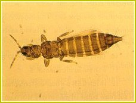

| Home |
| PULSES |
| 1. Bean Aphid |
| 2. Thrips |
| 3. Whitefly |
| 4. Green Leafhopper |
| 5. Pod Bug |
| 6. Lab-lab bugs / Stink bug |
| 7. leaf webber |
| 8. lab-lab leaf miner |
| 9. termites |
| questions |
| download notes |
PESTS OF PULSES :: Major Pests :: Thrips
2. Thrips: Ayyaria chaetophora, Caliothrips indicus, Megalurothrips distalis (Thripidae: Thysanoptera)
Damage symptoms: The leaves are mottled with characteristic silvering due to the attack of insect especially under dry spell on lab lab, black gram, green gram, cow pea. Later leaves dry and shed. Damaged plants do not develop pods. It also acts as a vector of many diseases.
|
 |
Caliothrips indicus |
Management: Spray Malathion 50 EC 1.0 L or Carbaryl 50 WP 1.0 kg in 700 L water.